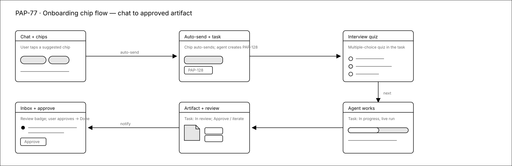
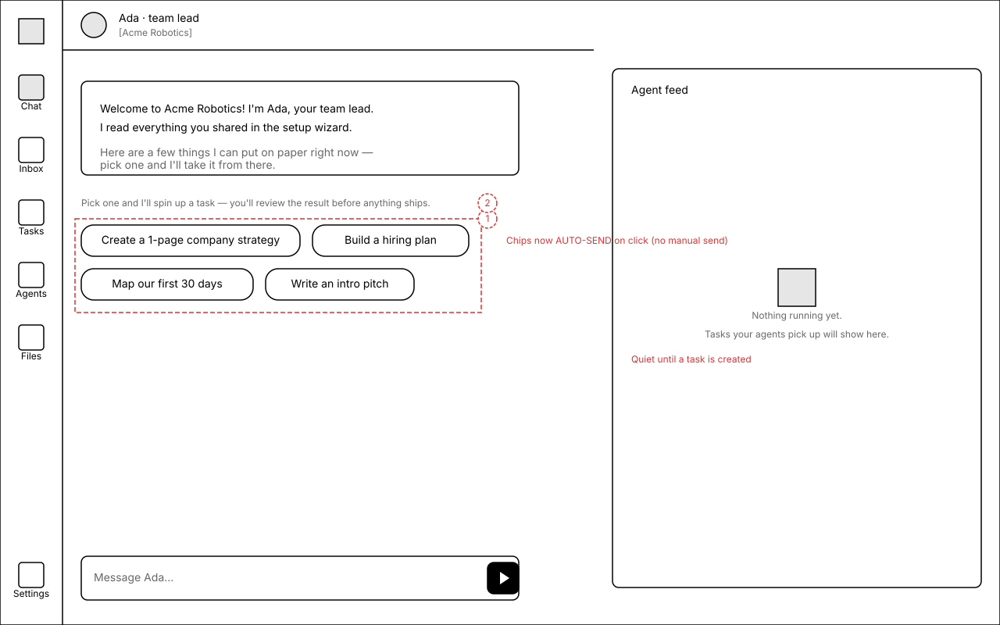
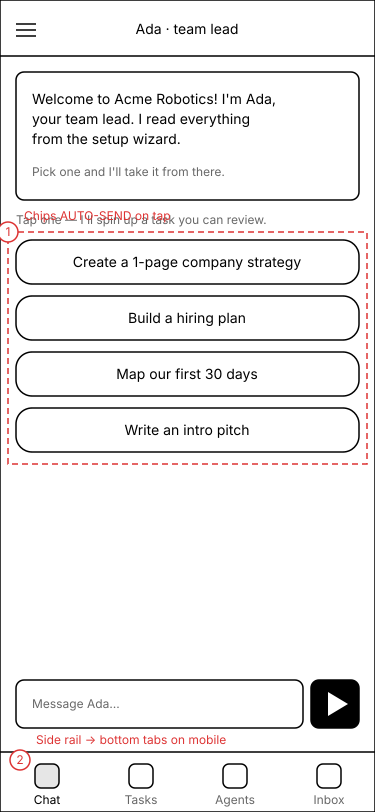
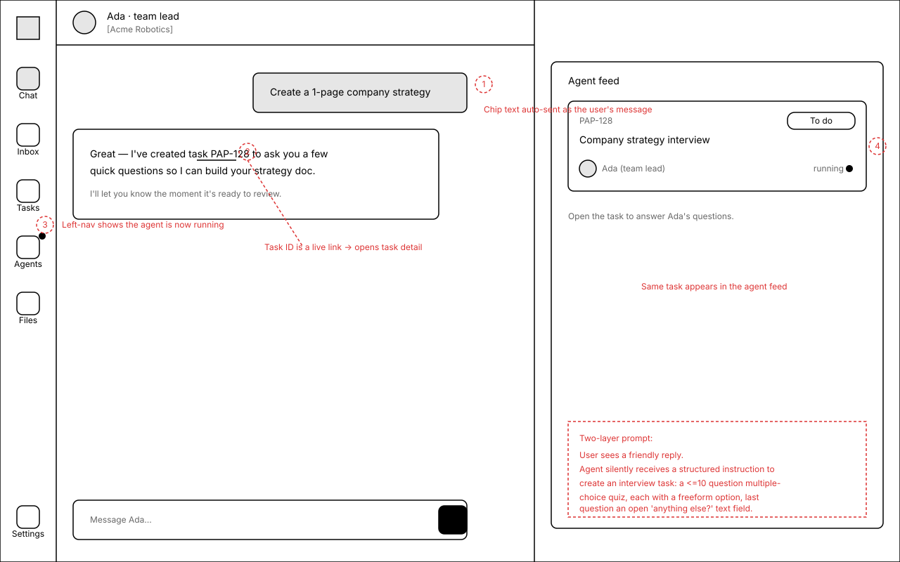
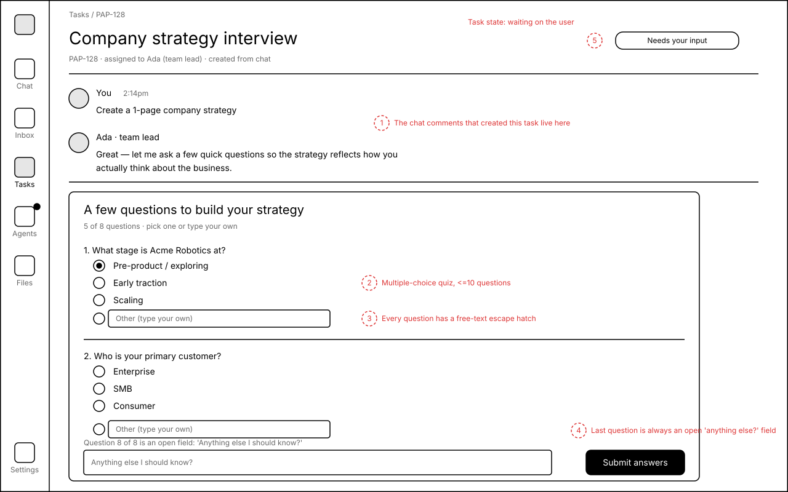
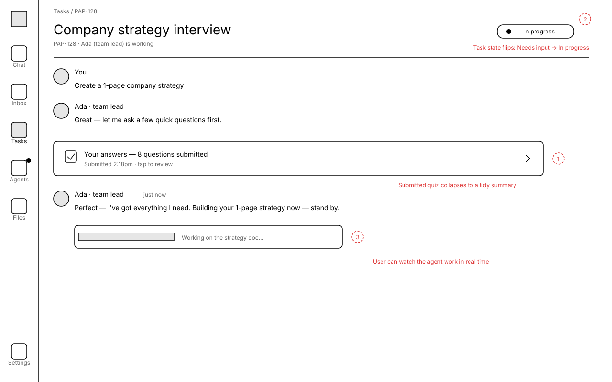
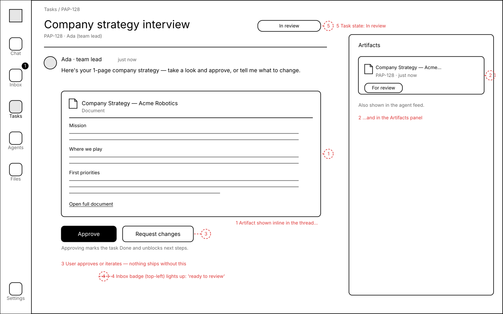
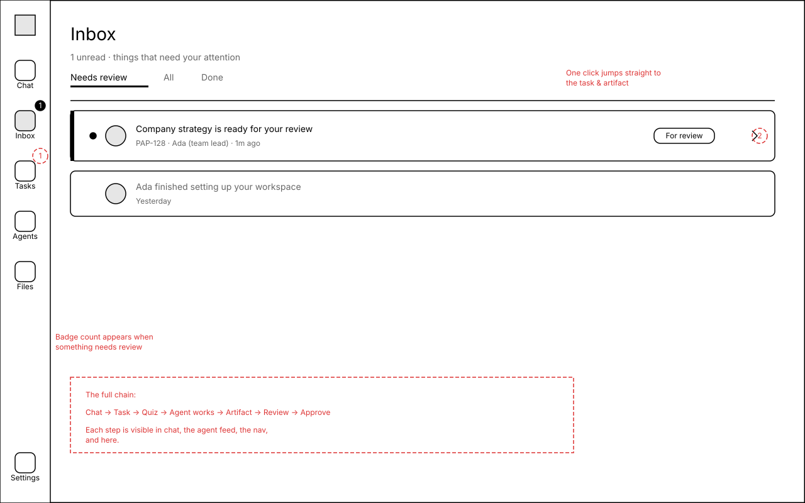

Intro chat chips → real tasks, quizzes & reviewable artifacts
Today the four suggested chips under the post-onboarding chat just pre-fill the input box, and a sent message might become a buried comment. This redesign makes each chip auto-send and spin up a real, traceable Paperclip task: the team-lead agent creates an interview quiz, the user answers it inside the task, the agent produces a document artifact, and the task moves to In review for approval. The point isn't the documents — it's teaching a brand-new user the core Paperclip primitives (tasks, states, live agents, comments, artifacts, review, approval, chaining) on their very first interaction.
One chip click, the full Paperclip loop
Solid arrows = the happy path a first-time user walks. Top row left-to-right, then down and back across the bottom row. Each hop is the same task, surfaced in a new place.

1.Post-onboarding chat
Where the user lands when the wizard finishes. Same two-pane layout as the rest of the app — chat on the left, a quiet Agent feed on the right — so the workspace they'll live in is visible from second one. The four chips get clearer, outcome-oriented copy.


Annotations
- 1 Four chips with new copy: Create a 1-page company strategy, Build a hiring plan, Map our first 30 days, Write an intro pitch. Clicking now auto-sends — no manual Send step.
- 2 Helper line sets the expectation: "Pick one and I'll spin up a task — you'll review the result before anything ships."
- Right pane = Agent feed, intentionally empty/quiet until a task exists.
- Mobile: side rail collapses to a bottom tab bar; chips stack full-width and still auto-send on tap.
2.Chip clicked → task created
The chip text posts as the user's own message; the agent replies conversationally and, behind the scenes, creates the interview task. The user immediately sees the same task surface in three places — proving the chat isn't a dead-end.

Annotations
- 1 The chip text appears as the user's sent bubble — auto-sent, no Send click.
- 2 Agent reply: "Great — I've created task PAP-128…" with the task id as a live link into the task.
- 3 Left nav shows the agent is now running (live dot on Agents).
- 4 The same task shows as a card in the Agent feed (id, title, "To do", assignee, running).
- Two-layer prompt: the user reads a friendly sentence; the agent silently receives a structured instruction — "create an interview task: a ≤10-question multiple-choice quiz, every question has a free-text option, the last is an open 'anything else?' field; don't ask anything the wizard already answered."
3.Task detail — interview quiz
Opening the task shows the two chat comments that created it, then a multiple-choice quiz the agent built. The user answers inside the task — their first time using a task as a two-way workspace, not a status page.

Annotations
- 1 The two chat comments that led here are carried into the task thread — context travels with the work.
- 2 A multiple-choice quiz, ≤10 questions, rendered as an interaction card.
- 3 Every question has a freeform "Other (type your own)" escape hatch.
- 4 The last question is always an open "Anything else I should know?" text field.
- 5 Status pill "Needs your input" — the user learns a task can be waiting on them.
4.Task detail — agent working
After submitting, the quiz collapses to a tidy summary and the agent acknowledges and starts building. The task flips to In progress with a live indicator the user can watch.

Annotations
- 1 Submitted quiz collapses to "Your answers — 8 questions submitted" (expandable).
- 2 Status flips Needs your input → In progress, with a running dot.
- 3 A subtle progress strip ("Working on the strategy doc…") lets the user watch the agent run in real time.
5.Task detail — in review + artifact
The agent posts the finished document inline and moves the task to In review. The same artifact appears in the right-hand Artifacts panel, and the user holds the decision: Approve or Request changes.

Annotations
- 1 The artifact is shown inline in the thread (document preview with real headings).
- 2 …and listed in the Artifacts panel with a "For review" badge — find it from anywhere.
- 3 Approve / Request changes — nothing ships without the user; iteration is one click.
- 4 The Inbox badge (top-left) lights up: "ready to review".
- 5 Status pill "In review" — the approval gate is explicit.
6.Inbox — review badge
While the agent worked, the user could be anywhere. The Inbox badge and a single notification row pull them straight back to the task and its artifact — demonstrating how actions chain and notify across the app.

Annotations
- 1 The nav Inbox badge count appears the moment something needs review.
- 2 One click on the unread row jumps straight to the task + artifact.
- The full chain made visible: Chat → Task → Quiz → Agent works → Artifact → Review → Approve, each step surfaced in chat, the agent feed, the nav, and here.
This reuses primitives that already exist
Nothing here needs net-new infrastructure — the flow is an orchestration of mechanisms already in the codebase. (Planning note, not a build instruction.)
- Auto-send chips — the chip click handler in
ui/src/pages/BoardChat.tsxcurrently callssetInput(chip.prompt); it would instead submit immediately. The new chip set also carries a hidden "agent instruction" distinct from the visible message (the two-layer prompt). - Interview quiz — the existing
ask_user_questionsinteraction already renders as a multiple-choice quiz with per-question options inside task detail (IssueThreadInteractionCard.tsx→AskUserQuestionsCard). Freeform "Other" + final open field map to its option/answer model. - Artifact + review — documents created via
PUT /api/issues/{id}/documents/{key}render inArtifactsPanel.tsx/DocumentViewerwith Approve/Reject whenready_for_review; arequest_confirmationinteraction can gate approval. - Chaining + notifications — interaction
continuationPolicy: wake_assigneealready wakes the agent on answer/approve; the inbox badge is the surfacing layer.
Open questions
- Chip copy — does "Create a 1-page company strategy / Build a hiring plan / Map our first 30 days / Write an intro pitch" land, or keep any of the originals?
- Quiz length — is ≤10 questions right for the first run, or should the first chip be deliberately short (≈4–5) to avoid fatigue before the user has seen any payoff?
- Answer location — answer the quiz only inside the task (shown here), or also allow it to continue inline in chat?
- Auto-send safety — should the very first chip click show a tiny "this creates a task" confirmation the first time, or trust the helper text?
- Do all four chips follow the same interview→artifact pattern, or do some (e.g. "Write an intro pitch") skip the quiz and draft straight to a reviewable artifact?
- Naming — the team-lead agent is "CEO" in some copy and "team lead" here; confirm which term the product uses post the PAP-67 team-centric rename.